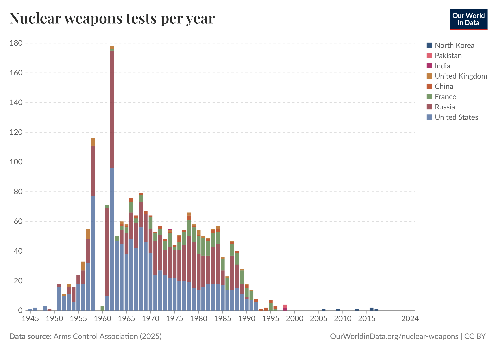
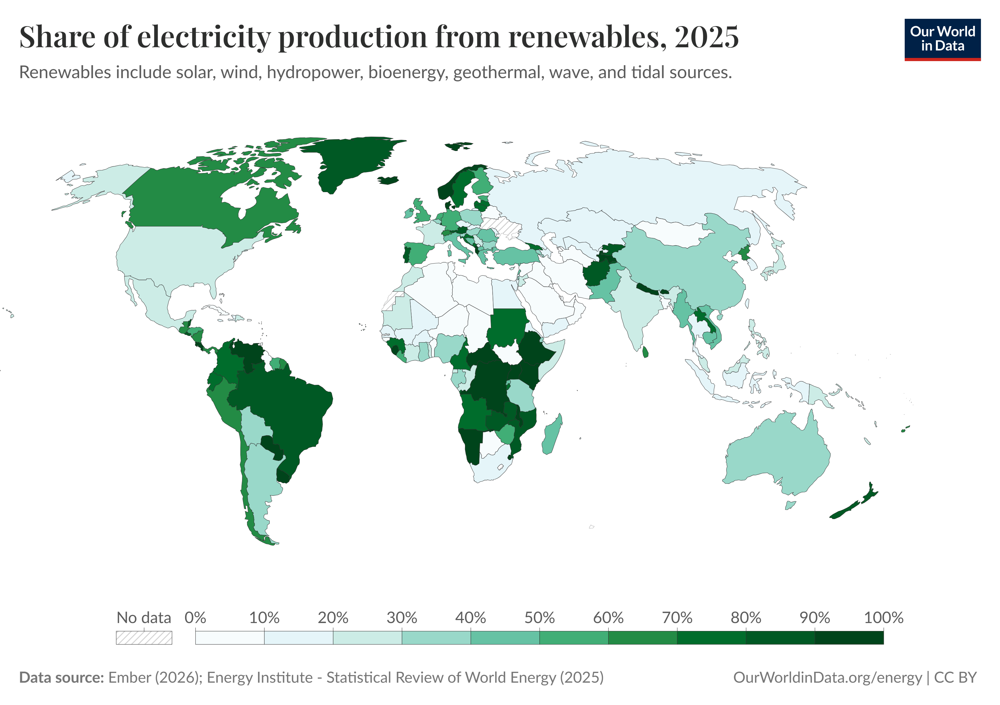
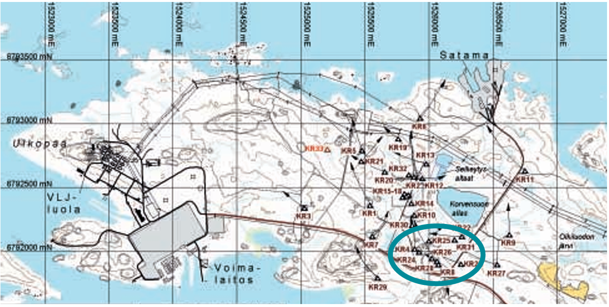

Defining the Threat
Radiation pollution is the release of radioactive substances into the air, water, or soil. Because these isotopes decay slowly, over years, decades, or centuries, their effects are long-lasting and hard to reverse.
It primarily falls under pollution, but in catastrophic cases like Chornobyl, it becomes habitat destruction.
Radiation doesn't just poison; it alters DNA, making its effects intergenerational.
Global Context

Nuclear plants are concentrated in densely populated regions. Radiation doesn't respect borders; a single failure can trigger continental-scale consequences.
The Atomic Age & Historical Context

Human-driven radiation pollution began in the 1940s. Two landmark studies shaped our understanding:
- Life Span Study (1947): Tracked ~120,000 Hiroshima/Nagasaki survivors. Found leukemia rates 4–5× normal, plus elevated solid cancers and cataracts.
- Chornobyl Liquidators (1986): Cleanup workers suffered Acute Radiation Syndrome, psychological trauma, and surging thyroid cancer rates.
Major Causes & Weapons Testing

Radiation pollution peaked in the 1950s–60s due to weapons testing. Today, the primary causes are:
- Nuclear Accidents: Meltdowns release Iodine-131 and Cesium-137 into the atmosphere.
- Improper Waste Disposal: Radioactive materials leach into groundwater.
- Uranium Mining: Tailings contaminate surrounding soil and aquifers.
Impact on Wildlife & Biology

Radioactive particles settle into soil and water, then move up the food chain through biomagnification, which causes it to concentrate into apex predators.
Chronic DNA mutation causes reduced fertility, physical deformities, and shortened lifespans. Animals trapped in contaminated zones cannot recover fast enough to sustain populations.
Case Study: Avian Mortality

Decades after the disaster, bird populations near Chornobyl still show skewed age and sex ratios, a sign of elevated mortality and failed recovery. Lingering radiation continues to prevent biological stabilization.
Disruption of Ecosystem Services
Radiation pollution doesn't just harm wildlife; it destroys the services ecosystems provide to humans.
Provisioning Services
Contaminated soil can't grow safe crops. Livestock on affected land produce radioactive meat and milk, cutting off the food supply.
Regulating Services
Radioactive runoff poisons watersheds. The environment loses its ability to naturally purify water, causing long-term groundwater toxicity.
Cultural Services
Exclusion zones eliminate ecotourism. Indigenous communities lose their connection to ancestral lands.
Supporting Services
Radiation kills soil microbes and decomposers, halting nutrient cycling and breaking down the foundation of the entire biome.
Government Policy & Alternative Energy
Prevention requires strict oversight. Key U.S. frameworks include NEPA (environmental assessments for nuclear projects) and EPA regulations under the Clean Air Act and Safe Drinking Water Act, which cap allowable radionuclide emissions.

Transitioning to solar, wind, and hydro reduces nuclear demand, directly cutting the creation of new radioactive waste.
Engineering Solutions: ONKALO

Existing waste must be isolated for hundreds of thousands of years. Finland's ONKALO facility, carved into stable bedrock deep underground, is the world's most advanced solution for permanently removing high-level waste from the biosphere.
Key takeaway: Deep burial in stable geology removes the risks that surface storage cannot: vulnerability to disasters, climate change, and human interference.
Conclusion & Future Steps
Radiation pollution is a long-term crisis driven by nuclear accidents, improper waste disposal, uranium mining, and weapons testing. Its consequences span health (DNA damage, cancer), ecology (demographic collapse, biomagnification), and essential ecosystem services (food, water, nutrient cycling).
Because contamination persists for centuries, three steps are critical:
- Stricter policy: enforce NEPA and EPA standards for nuclear plants and uranium extraction.
- Scale up ONKALO-style repositories: permanently isolate existing high-level waste underground.
- Accelerate the renewable transition: reduce dependence on nuclear power to prevent future waste generation.
Humanity's energy needs and environmental safety are not opposites, but balancing them demands urgent, sustained action.